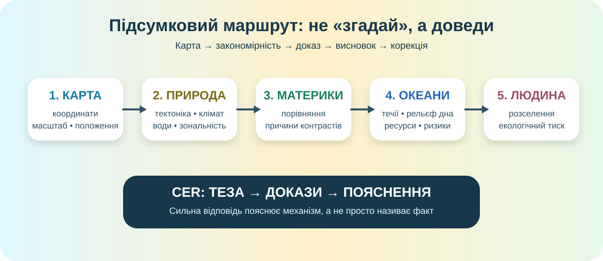

Показати, що Ви вмієте працювати як географ
Підсумкова робота перевіряє не окремі параграфи, а здатність переносити знання в нову ситуацію. У кожному блоці є карта, дані або географічний кейс.

Маршрут роботи: карта → природні закономірності → материки → океани → людина → CER.
Паспорт учня
Завдання відкриються після заповнення трьох полів.
Карта світу: прочитайте простір
Працюйте з реальною картою. Не шукайте готову відповідь у підписі — використайте положення, форму узбереж, рельєф і взаємне розташування об’єктів.
Природні закономірності: знайдіть механізм
Кейс А — клімат
На 50° пн. ш. захід Європи має м’якші зими, ніж внутрішні райони Євразії на тій самій широті.
Кейс Б — природні зони
Тундра, тайга, мішані ліси, степи й пустелі змінюють одна одну не випадково.
Материки: порівняйте, а не перекажіть
Пара: Африка та Південна Америка. Обидва материки перетинає екватор, але розподіл опадів, річкові системи та площі пустель різняться.
Океани: система, що рухається
Атлантика
У центрі океану проходить Серединно-Атлантичний хребет.
Тихий океан
По окраїнах поширені глибоководні жолоби, острівні дуги, землетруси й вулкани.
Людина і природа: де закінчується «сприятлива територія»?
Велика річкова долина має родючі ґрунти, густе населення, великі міста та інтенсивне землеробство. Водночас зростають забруднення води, ризик повеней і конфлікти за ресурси.
Фінальний CER
Теза має бути перевірюваною, докази — географічними, пояснення — показувати механізм.
Питання: «Чи можна передбачити основні риси природи території, знаючи лише її географічне положення?»
1 бал — за цілісний CER, у якому докази справді підтримують тезу.
Самооцінювання
Оцініть себе не за настроєм, а за тим, що реально вдалося.
Підсумок
Натисніть кнопку після виконання всіх блоків. Сторінка не вгадує якість відкритих відповідей замість учителя, але перевіряє повноту роботи й формує наступний крок.